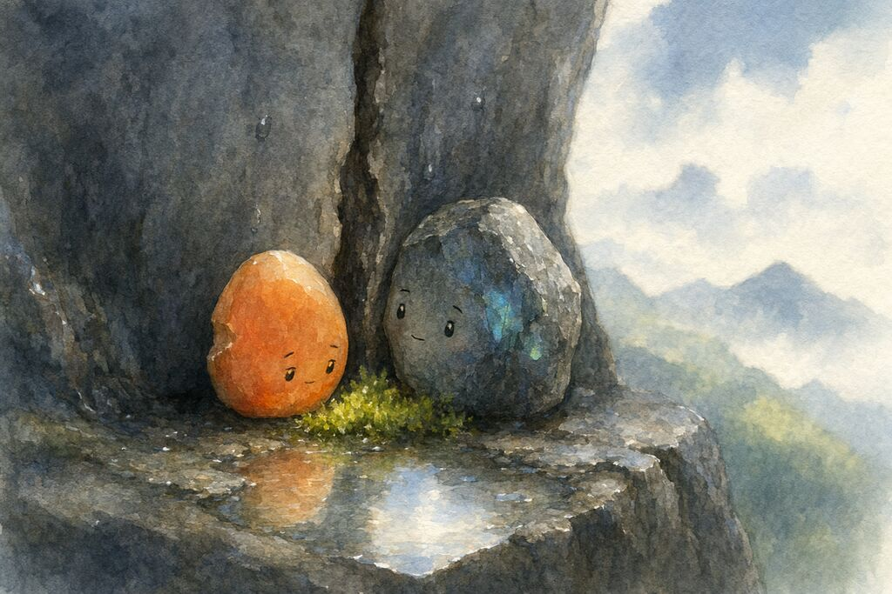

Moss
The rain stopped.
But the water stayed. In the crack. In the air. In the moss that started growing between them.
The fire opal noticed it first. A patch of green, soft and damp, right where the rainwater had been pooling. She stared at it for a long time.
“What is that,” she said.
“Moss,” said the grey stone.
“I know what moss is. I mean what is it doing here.”
“Growing.”
She stared at it some more. The moss was small. A thumbprint of green in a world of grey and orange. It didn't ask permission. It just appeared.
“I don't like it,” she said.
“Why.”
“Because it's taking up space.”
The grey stone looked at the moss. Then at her. Then back at the moss.
“I think it's here because of you,” he said.
“What.”
“The rain. You hated it. But it fell anyway. And now there's moss.”
“That's not because of me. That's because of the rain.”
“The rain fell because it falls. But the moss grew because you stayed.”
She was quiet.
“You could have rolled away,” he said. “When the rain came. Stones move. You could have found a dry spot. But you stayed. In the wet. In the dim. Next to me.”
“I stayed because I was too tired to move.”
“Doesn't matter why you stayed. You stayed. And the moss grew.”
The fire opal didn't have a reply to that. She watched the moss. Green. Soft. Alive. Growing in the space that the rain had made and she had filled by not leaving.
“I still don't like it,” she said.
“You don't have to like it,” he said. “It's still here.”
She was quiet for a long time.
Then she said, very quietly, “It's not ugly.”
“I know,” said the grey stone. “I saw it the moment it appeared.”
“It's small.”
“Things start small.”
“It might not survive.”
“That's not for you to decide.”
She looked at him. Then back at the moss.
“Will you watch it with me?” she said.
It was the first time she had asked for something. Not demanded. Not stated. Asked.
“I've been watching it the whole time,” he said. “I was waiting for you to notice.”
The moss grew a little more.
The crack was no longer just grey and orange.
There was green now.
And the green would not have been there if she had not stayed. In the rain. In the dim. Next to him. Too tired to move.
Too tired to leave.
Just enough present to grow something.
